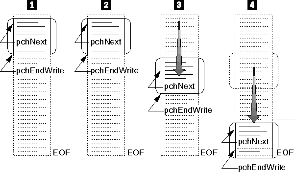

Advancing a File I/O Buffer for Writing
The following figure shows how the file I/O buffer is advanced as a file
is written to.
- The application opens the file for buffered
I/O by calling mmioOpen. The mmioOpen function sets pchNext to point
to the beginning of the file I/O buffer and pchEndWrite to point
to the end of the buffer.
- The application writes to the I/O buffer and
increments pchNext.
- Once the application fills the buffer, it
calls mmioAdvance to empty the contents of the buffer to disk. The mmioAdvance
function resets pchNext to point to the beginning of the buffer.
- The application continues to write to the
buffer and call mmioAdvance to empty the contents of the buffer when its
full. At the end of the file, there is not enough information to fill the
buffer. When the application calls mmioAdvance to empty the contents of
the buffer, pchNext points to the end of the valid data in the buffer.
[Back: Advancing a File I/O Buffer for Reading]
[Next: Ending Direct Access of a File I/O Buffer]